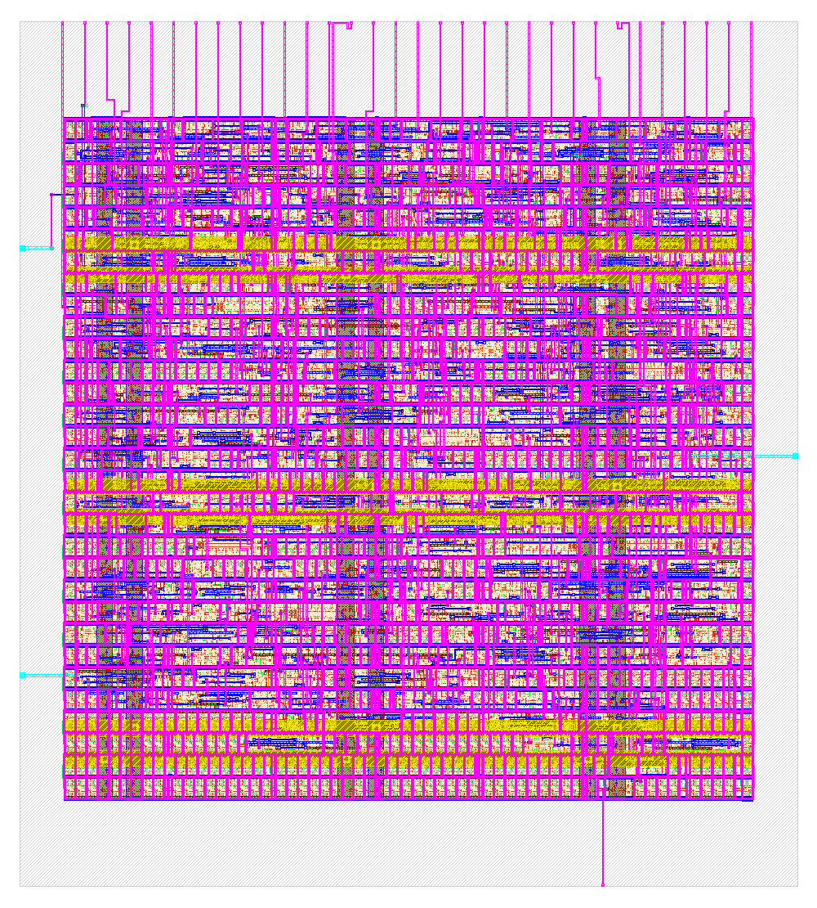

Lab 6 — RTL to GDS on SKY130 (LibreLane, SPM)
Run a full LibreLane 3.0.17 flow on the bundled 32-bit sequential multiplier, read the placement, routing and signoff metrics, and compare a 30/45/60 utilization sweep.
Recorded evidence. All figures in the result tables were produced on this machine on 11 November 2026, America/Chicago, with LibreLane 3.0.17, OpenROAD, OpenSTA 2.7.0, Magic 8.3.623, KLayout and Netgen, PDK sky130A (ciel 8afc8346a57fe1ab7934ba5a6056ea8b43078e71), library sky130_fd_sc_hd. The 45% run RUN_2026-11-11_16-09-06 completed 80/80 steps, including GDS, DRC, XOR and LVS. The 30% and 60% runs (util30, util60) used --override-config FP_CORE_UTIL=… and stopped after Odb.ReportWireLength; they have no GDS. Copies of metrics, reports and the render live in labs/analysis_examples/rtl_to_gds/. The design sources used are in labs/L06_rtl_to_gds/.
What you will do
- Launch LibreLane with
--manual-pdkon the SPM, at 45% core utilization and a 10 ns clock. - Read back die size, GPL overflow, repair-buffer counts, routing DRC iterations, layer wirelength and post-route slacks.
- Optional: repeat through detailed routing at 30% and 60% and fill the comparison table. Recorded results are already provided.
1. The design
The DUT is LibreLane’s bundled SPM, a 32-bit sequential multiplier, DESIGN_NAME: spm, CLOCK_PERIOD: 10, CLOCK_PORT: clk, FP_CORE_UTIL: 45. The Verilog and SDC in labs/L06_rtl_to_gds/src/ are copies of that bundled design. This lab does not invent a new netlist; it records a complete GDS path on a design the flow already knows how to finish.
2. Command
With the PDK at $PDK_ROOT/sky130A and LibreLane 3.0.17 on your PATH (the course environment uses llane_shell and always passes --manual-pdk):
librelane --manual-pdk --pdk-root "$PDK_ROOT" --pdk sky130A \
--run-tag my_spm \
config.yaml
The config.yaml in the lab folder is the one that was run (45% for sky130, 10 ns). To reproduce only the utilization sweep, without GDS:
librelane --manual-pdk --pdk-root "$PDK_ROOT" --pdk sky130A \
--run-tag util30 \
--override-config FP_CORE_UTIL=30 \
--to Odb.ReportWireLength \
config.yaml
The same with FP_CORE_UTIL=60 and a unique --run-tag. Do not reuse the 45% tag. Parallel runs can exhaust a small machine; sequential is safer. A full 45% path through routing on this design finished on the order of a few minutes; the signoff append (Magic.StreamOut through Manufacturability) took about 18 seconds in the recorded continuation.
3. Recorded 45% results — from RTL to GDS
The 45% run completed with “Flow complete”, 80/80 steps, and this KLayout render of the final GDS:

spm, 45% utilization, 1,000 × 1,110 pixels, from 57-klayout-render/spm.png (283,536 bytes), 11 November 2026, America/Chicago.| Item | Recorded value |
|---|---|
| Die | 96.6 × 107.32 µm, area 10,367.1 µm² |
| Core | (5.520, 10.880)–(91.080, 95.200) µm, area 7,214.42 µm², 31 unithd rows |
| GPL | global_placement -density 0.573812 -routability_driven; util 52.040%; overflow 0.8623 → 0.0990 in 397 iterations; HPWL 1,778.559 → 3,827.500 µm; 16×16 bins 5.348 × 5.270 µm; routability overflow 0, weighted congestion 0.8653 |
| repair_design | 34 input + 1 output clkdlybuf4s25_1; 2 slew and 2 fanout violations; 25 buffers on 2 nets; margins 20% slew/cap |
| Detailed placement | Displacement 0 at this step; HPWL 5,294.5 → legalized 5,583.9 → optimized 5,294.5 µm |
| Global route | met1–met5; total usage 15.60%, overflow 0; met2 31.54%; WL 10,695 µm; 2,057 vias |
| Detailed route | DRC 19 → 4 → 0; final WL 6,508 µm (met1 2,524, met2 3,846, met3 29, met4 108, met5 0); 1,991 single-cut vias; longest net net60 173.355 µm; antenna 0 |
| Fill / final util | 803 fill cells, area 2,667.56 µm²; 423 stdcells, area 4,546.86 µm²; utilization 0.630246; 33 hold dlygate4sd3_1, 9 clkbuf_16, 64 dfrtp_2 |
| Post-route STA | Worst setup 3.590931 ns MET at max_ss; worst hold 0.253127 ns MET at min_ff; WNS/TNS 0; slew/cap/fanout 0; see lesson 45 |
| GDS | Magic 702,348 bytes; KLayout 386,238 bytes |
| Magic DRC | [INFO] COUNT: 0 |
| KLayout DRC | 257 rules, every count 0; klayout__drc_error__count: 0 |
| XOR | Total XOR differences: 0; design__xor_difference__count: 0 |
| LVS | 328 devices, 361 nets each side; “Circuits match uniquely.” |
| IllegalOverlap | 0 |
| Antenna | 0 nets, 0 pins, 0 diodes — details in lesson 51 |
| Manufacturability | Antenna Passed, LVS Passed, DRC Passed |
4. Utilization sweep (30 / 45 / 60)
The comparison is discussed in lesson 58 and lesson 59. The compact table, from labs/analysis_examples/rtl_to_gds/utilization_sweep.json and the three metrics.json files:
| FP_CORE_UTIL | 30 | 45 | 60 |
|---|---|---|---|
| Die area (µm²) | 14,658.3 | 10,367.1 | 8,161.52 |
| GPL util / target density | 34.540% / 0.42147 | 52.040% / 0.573812 | 69.349% / 0.722268 |
| GRT usage (met2) | 11.71% (23.27%) | 15.60% (31.54%) | 24.70% (43.28%) |
| DRT DRC iterations | 43 → 16 → 0 | 19 → 4 → 0 | 95 → 15 → 21 → 0 |
| Final route DRC | 0 | 0 | 0 |
| DRT WL (µm) | 6,613 | 6,508 | 7,613 |
| Longest net (µm) | 185.66 | 173.355 | 139.72 |
| DRT vias | 1,980 | 1,991 | 2,136 |
| Final instance util | 0.424646 | 0.630246 | 0.825627 |
| GDS / Magic / KLayout / LVS | not run | all Passed | not run |
45% is the shortest wirelength. 60% is the most congested and the only run whose DRC error count rose mid-loop, but it still closed. 30% and 60% were not taken through GDS, so no DRC/LVS claim is made for those two databases beyond the router’s own route__drc_errors = 0.
5. What to hand in
If you re-run the flow: the run tag, the resolved FP_CORE_UTIL and GPL -density line, the final route__drc_errors and route__wirelength, and — for a full run — the manufacturability report and the LVS “Final result” line. Compare your numbers with the tables above; a different LibreLane or PDK revision will not match to the last picosecond. State the versions. For a written discussion, explain why 45% wirelength was shorter than 30% on this netlist, using the die-size and congestion columns, as in lesson 58.
Related lessons: 58. Placement, 59. Routing, 45. Multi-corner STA, 62. Physical signoff.
Updated 11 November 2026 · 84 lessons · Offline lessons, diagrams, source code and recorded results · External references require internet access.
All 84 lessons
- Part I · Foundations: the physical chip and its vocabulary
- 1. What Is a Chip? Board, Package & Die
- 2. The Silicon Wafer: From Crystal to Dies
- 3. How a Die Is Built: SKY130 Layers & Lithography
- 4. The MOSFET: SKY130’s Transistor
- 5. Anatomy of a Die: Core, Pad Ring & Seal Ring
- 6. Packages: Wire Bonds, Flip-Chip, QFN & WLCSP
- 7. The PCB and the Path to the Transistor
- 8. The Design Flow and Its Files: RTL to GDS
- 9. Signals Primer: DC, AC, RMS, Decibels & the FFT
- Part II · Transistors to logic gates
- 10. Logic Gates at the Transistor Level
- 11. Drive Strength & Transistor Sizing
- 12. More Gate Topologies
- Part III · Standard-cell layout
- 13. Site Rows & Standard Cell Placement
- 14. The Power Grid & Routing Grids
- 15. Metal Layers, Vias & the Stackup
- 16. Inside a Standard Cell's Layout
- 17. The Cell Template: Tracks, Sites & Edges
- 18. Anatomy of a Bigger Cell
- 19. Pin Access & Porosity
- 20. A Flip-Flop From the Inside
- Part IV · Loads, timing and interconnect
- 21. Loads
- 22. Liberty Files: What a Cell Library Records
- 23. Reading Liberty Timing Tables
- 24. Standard-Cell Characterization: How Liberty Is Made
- 25. Timing
- 26. Setup and Hold
- 27. Latch-Based Design & Time Borrowing
- 28. Routing Resistance and Parasitics
- 29. Delay from Physics: Transistor, Contact, Via, Wire & Gate
- 30. Electromigration
- 31. Reliability & Aging: HCI, BTI, TDDB & Self-Heating
- 32. DFM, Variation & Yield: A Digital View
- Part V · Digital implementation
- 33. RTL Patterns: FSMs, Handshakes, Resets & Lint
- 34. RTL, Synthesis & Timing Constraints
- 35. The Clock Tree
- 36. Clock Generation: Oscillators, DCO, PLL & Jitter
- 37. Clock Gating & Power States
- 38. Power Analysis & Low-Power Cells
- 39. Clock-Domain Crossings & Reset
- 40. Scan
- 41. DFT Beyond Scan: Faults, ATPG, BIST and JTAG
- 42. A Timed Logic Path: Registers, Clocks, Scan & Speed/Power
- 43. Memories: SRAM, OpenRAM and DFFRAM
- 44. Datapath & Arithmetic
- 45. Multi-Corner STA: OCV, CRPR & Hold Cells
- 46. Functional Verification: Testbenches, Assertions, Formal & Gate-Level Sim
- Part VI · Physical cells and the floorplan
- 47. Fill Cells
- 48. Well Taps and Latch-up
- 49. Endcaps
- 50. Tie Cells
- 51. Antenna Diodes
- 52. Decap Cells
- 53. Spare Cells and ECO
- 54. Level Shifters
- 55. Floorplan
- 56. Caravel Integration: The User Project Wrapper
- 57. Hierarchical Design, Abstracts & ECO
- 58. Placement: Global, Legalization & Detailed
- 59. Routing & Timing Closure
- 60. Digital Signal Integrity: Crosstalk Delay & Glitch
- 61. Metal Fill and Cell Fill
- 62. Physical Verification Signoff
- 63. Power-Integrity Signoff: Static IR, Dynamic IR & EM
- Part VII · The chip boundary: I/O, ESD and package
- 64. The I/O Ring
- 65. ESD and Clamps
- 66. I/O Fill
- 67. RDL Routing
- 68. I/O Power and IR Drop
- 69. Power, Package & Thermal Coupling
- 70. Tapeout, MPW & Tiny Tapeout
- 71. Post-Silicon Bring-Up, Test & Characterization
- Part VIII · Analog circuits
- 72. Analog Bias, gm & Headroom
- 73. Feedback, Loading & Stability
- 74. Differential Pairs, Common Mode & CMFB
- 75. Noise, Mismatch & Variation
- 76. References, Temperature & Startup
- 77. Comparators & Power Management: StrongARM, LDO & POR
- 78. Matching, Layout & Extracted Netlists
- Part IX · Mixed-signal: sampling, conversion and verification
- 79. Sampling, Aliasing & Settling
- 80. ADC & DAC Interfaces
- 81. FFT, Noise & Distortion Measurements
- 82. Calibration, Trimming & Testability
- 83. Crosstalk, Return Paths & Isolation
- 84. Mixed-Signal Verification & Bring-Up